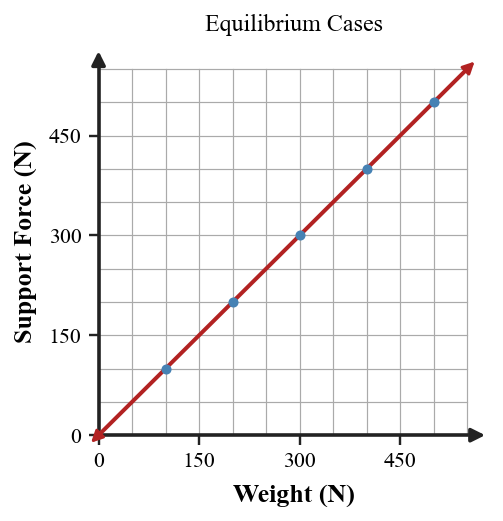

Practice focus: Determine whether an object is in mechanical equilibrium and explain how balanced forces relate to rest or constant straight-line motion.
Define mechanical equilibrium in terms of net force.
Define static equilibrium and give one example.
Define dynamic equilibrium and give one example.
A car travels straight at constant speed. State whether it can be in equilibrium.
A book rests on a table. State whether it can be in equilibrium.
In equilibrium, is the net force zero or nonzero?
Name the upward force from a level surface on a resting object.
Name the downward gravitational force on an object near Earth.
A scale supports a person standing still. Is the scale reading an individual force or the net force?
An elevator moves upward at steady speed. Classify the motion as dynamic equilibrium or changing motion.
If the upward and downward forces are equal, what is the vertical net force?
Balanced horizontal forces can occur while an object is at rest, moving steadily, or both?
A 5 kg backpack rests on a bench. Use $g=10\,\text{N/kg}$ to determine its weight and support force.
A person stands still on a scale reading 150 N. State the support force, weight, and net force.
A box moves at constant speed while pushed with 45 N right. Determine the friction force required for horizontal equilibrium.
A 90 N sign hangs motionless from two chains. State the net force and explain what the combined upward effect of the chains must equal.
A passenger rides upward in an elevator at steady speed. Compare support force and weight.
A 7 kg box rests on a level floor. Use $g=10\,\text{N/kg}$ to determine weight, support force, and net force.
A crate is pulled right with 35 N and experiences 35 N friction left. Determine the net force and describe two possible motion states consistent with the force balance.
Use the support-versus-weight graph. Describe the relationship shown for equilibrium cases.

A hanging object has 120 N of weight downward. Determine the total upward force required for equilibrium.
A car moves straight at steady speed while resistive forces total 500 N backward. Determine the required forward driving force for equilibrium.
A book has 25 N weight and a 25 N support force. Calculate the vertical net force and classify the equilibrium.
A suitcase on a moving walkway travels straight at steady speed. State the net force and explain why individual forces may still act.
A student says, “The scale reads 600 N, so the net force on me is 600 N upward.” Critique the statement and explain the role of weight.
A student claims balanced forces occur only when an object is stopped. Use dynamic equilibrium to correct the misconception.
The same sign hangs motionless from one vertical chain in one case and two angled chains in another. Explain how both can have zero net force while individual chain forces differ.
A train moves east at steady speed. Explain why the direction of motion does not tell you that the eastward force is larger than the westward force.
Compare two explanations of a cart moving straight at constant speed: one says the push exceeds friction because the cart moves; the other says the horizontal forces balance. Defend the stronger model using equilibrium and Newton’s First Law.
Design and defend a complete equilibrium model for a real object supported by one or more surfaces or cords. Include all important forces, arrow directions, and an explanation of why the net force is zero.